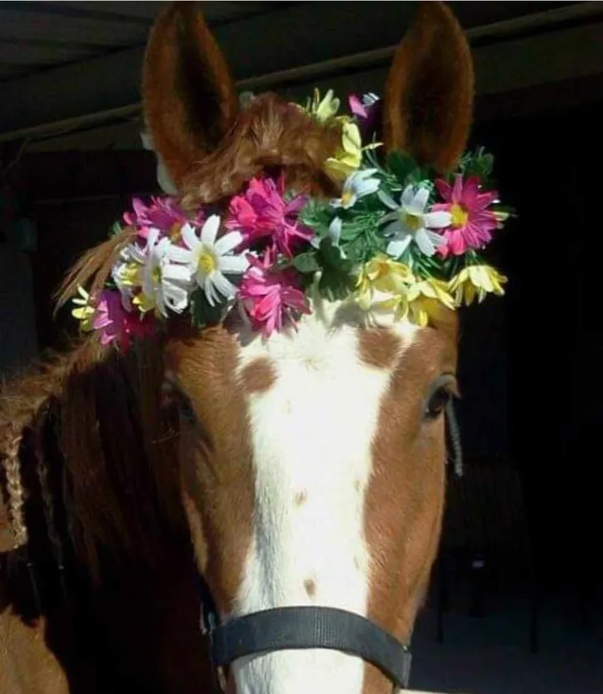
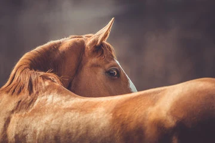
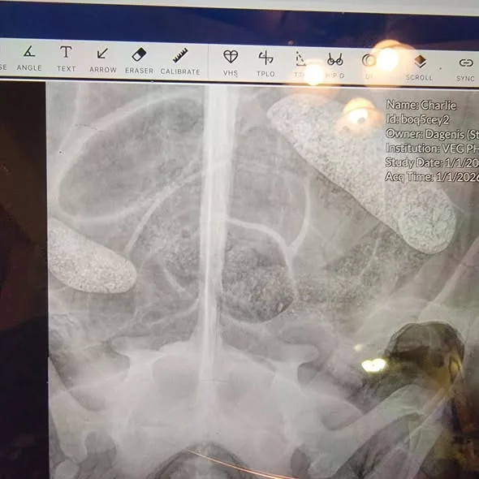
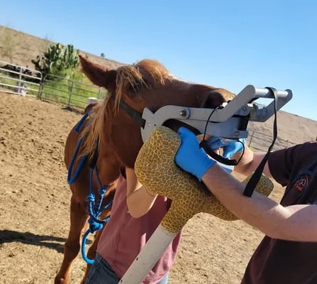
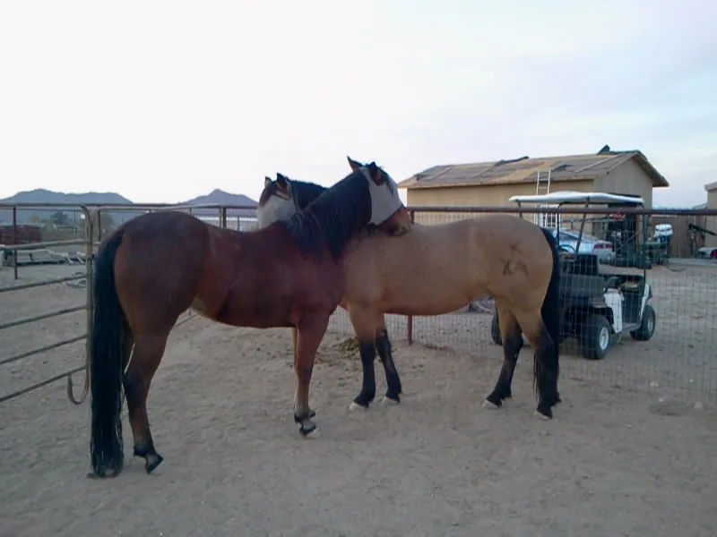
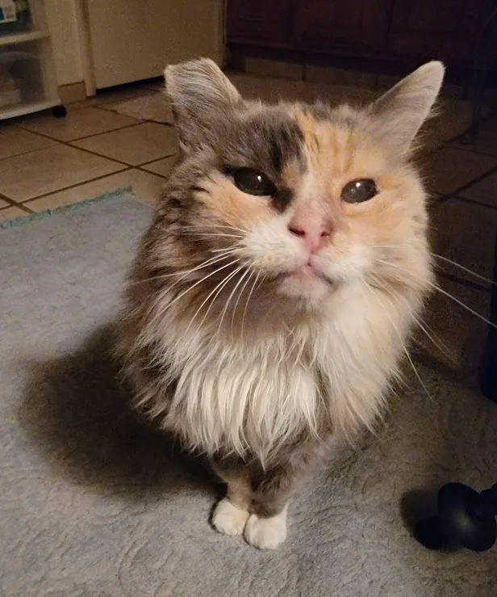

Tatiana
Abused as a filly, then loaded onto a truck bound for a Mexican slaughterhouse. A woman ran out with every penny she had and bought her freedom. Eighteen years later, she's still home with us — the princess of the place.

Yuma, Arizona · A farm sanctuary held together by volunteers.
For twelve years, this rescue existed quietly — no nonprofit status, no public fundraising, no ask. Just a farm in Yuma where animals that had run out of options came to live. Horses pulled from auctions, dogs days away from euthanasia, farm animals surrendered by owners who couldn’t cope. We paid for all of it ourselves and we told almost nobody.
Then the bills became impossible to carry alone. A horse in crisis doesn’t wait for a convenient moment. Vet bills don’t negotiate. Hay doesn’t get cheaper. We faced a real choice: quietly stop, or go public and ask for help. We chose to ask. In 2024 we became a 501(c)(3), and the community showed up.
Saint Francis of Assisi is remembered for treating every creature — the stray, the wounded, the overlooked — as worthy of care and dignity. That’s the spirit we try to live out on the farm every single day.
No animal here gets a deadline. Not for being old, not for being scared, not for being expensive. Some stay a season. Some stay forever. That’s always been the deal.
We ran the rescue quietly on our farm property, taking in the abused, unwanted, and forgotten animals of Yuma County — funded entirely out of our own pockets.
We became a registered 501(c)(3) nonprofit — not to change what we do, but to make sure we could keep doing it. The paperwork changed; the mission didn’t. Now we just have help.
Enclosures, play yards, and medical isolation areas go up piece by piece — all built by volunteers, all funded by the community. Right now, we sometimes have to turn animals away. That’s the hardest part of what we do.
Eventually, we dream of a full kennel facility so we never have to turn an animal away. That takes large donations and community support — and it starts with people like you.
Every animal here arrived from somewhere worse. Some we placed in homes. Some were too old or too hurt to go anywhere, so they stayed. And some we simply got to love for as long as we could.

Abused as a filly, then loaded onto a truck bound for a Mexican slaughterhouse. A woman ran out with every penny she had and bought her freedom. Eighteen years later, she's still home with us — the princess of the place.

Charlie came to us from Phoenix — her previous owner, an older gentleman who had cared for her for years, knew he could no longer keep up with her needs and brought her to us himself. He told us she was a ten-year-old male. The vet who performed her surgery had other news: she’s closer to thirty, and she’s a girl. Charlie spent a month on a feeding tube after a serious illness — and at one point pulled the tube out herself. The vet bills came to $3,700, every dollar covered by donations. She made a full recovery.

A senior Arabian who came to us abused and wary of women. She's a hard keeper — it takes real work to hold her weight on — and she needs regular dental care. We do it because that's what she needs.
Not every story ends with a rescue. These two got years of safety and love they should never have had to wait for — and they're part of why we keep going.

Kharma was traded to slaughter for a bottle of alcohol. She arrived carrying scars — physical ones she’ll never lose — and it took a long time before she trusted anyone. Her daughter Victoria came with her and never left her side. We lost Victoria to cancer, and it was one of the hardest days this sanctuary has had. Kharma carries on. She still has the scars.

A feral momma who'd never been touched by a human. We left the door open so she could escape the Arizona heat, and for over ten years she lived with us on her own terms. Around fourteen, she finally let us love her — sleeping on our bed, curled against our necks. She passed of old age two years ago. A beautiful momma to the end.
Every animal we’ve saved in 14 years was saved by someone who showed up and did the work. When you donate, your money isn’t paying anyone’s salary — it’s buying food, covering a vet bill, or funding the hoof trim that keeps a horse healthy.
It means showing up on a 110° Yuma afternoon because the animals need feeding and the fence needs fixing. It’s physical, unglamorous, deeply rewarding work — and it’s done entirely by people who love it.
We depend entirely on community support to keep going. If this story moves you, donating to Saint Francis Rescue is the most direct way to help the animals in our care.
Support usWhether you volunteer, foster, donate, or just share our page — every bit of support keeps the sanctuary running and moves us closer to that kennel facility.